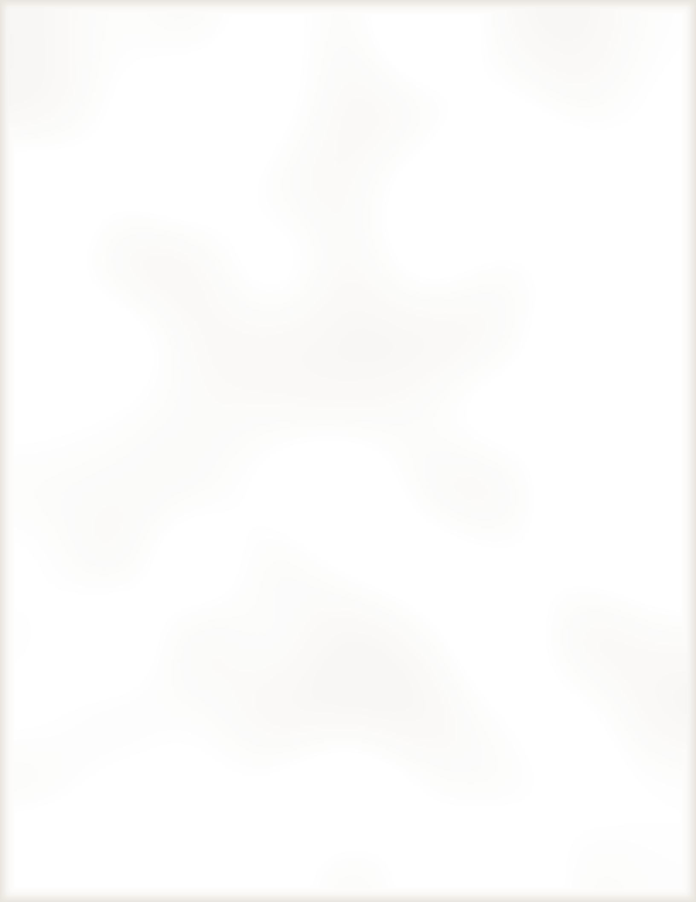

COMPLIMENTS OF THE COMPANY
TRAYS
Griddled baby corn
Charred in butter with crushed red pepper, lime zest and salt.
Red caviar canapés
Salmon roe, crème fraîche and chives on crisp water crackers.
Chicken satay
Garlic and soy marinated skewers, warm peanut sauce.
THE CART
Corner cart hot dog
Steamed bun, mustard, sauerkraut and onions stewed in tomato.
Hot soft pretzel
Twisted by hand, coarse salt, yellow mustard to dip.
SWEETS
The giant cookie
Brown-butter chocolate chip, iced with piano keys, cut at the table.
Cotton candy
Spun to order, pink or blue, just like Sea Point Park.
FOUNTAIN
Chocolate egg cream
Syrup, cold milk and seltzer, stirred until the foam rises.
Kiddie cocktail
Ginger ale, grenadine and a maraschino cherry.
Fresh lemonade
Squeezed this afternoon, plenty of ice.
Please, no toy pitches at the table.
MacMillan Toy Company, New York, 1988.
The giant cookie, cut at 9:30


MacMillan
Josh Baskin
Vice President, Product Dev.